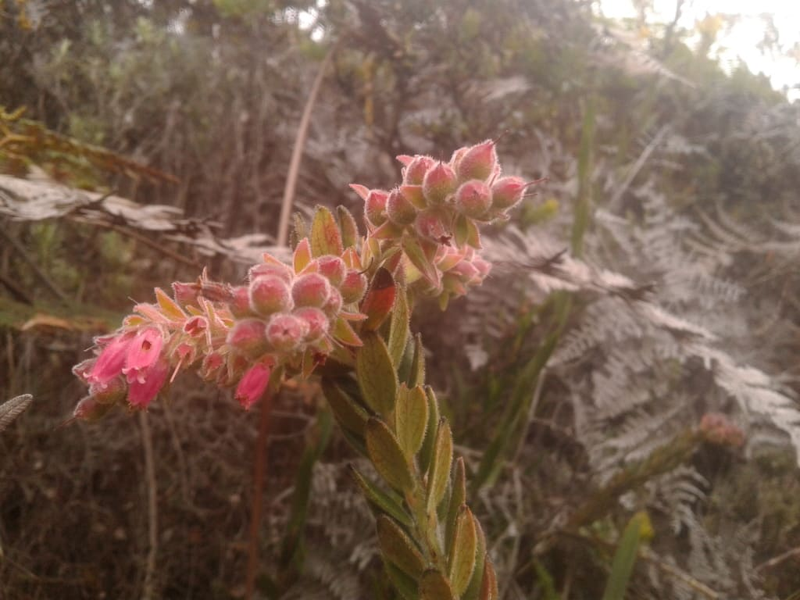

Agracillo

Arbustro espinoso de flores pequeñas y frutos rojos. Es una especie pionera, es decir, una de las primeras en colonizar áreas disturbadas. Sus frutos sirven de alimento para aves y pequeños mamíferos.

Explora la biodiversidad de esta hermosa región
Arbustro espinoso de flores pequeñas y frutos rojos. Es una especie pionera, es decir, una de las primeras en colonizar áreas disturbadas. Sus frutos sirven de alimento para aves y pequeños mamíferos.
Enredadera leñosa con tallos fuertes y hojas compuestas. Se utiliza en la construcción de cercas y como planta medicinal.
Liquen colgante que crece sobre los árboles. Es un bioindicador de la calidad del aire.
Hierba de flores amarillas muy llamativas. Se utiliza en jardinería y tiene propiedades medicinales.
Palma pequeña con hojas en forma de abanico. Sus frutos son comestibles y sus hojas se utilizan para techar.
Ave pequeña y rechoncha, conocida por su característico copete. Se alimenta de insectos y semillas.
Lagarto de tamaño mediano, con escamas rugosas y un collar de escamas alrededor del cuello. Se alimenta de insectos y pequeños vertebrados.
Serpiente de tamaño pequeño a mediano, de hábitos terrestres y nocturnos. Se alimenta de pequeños roedores y lagartijas. No es venenosa para los humanos.
Felino pequeño y esbelto, adaptado a vivir en zonas montañosas. Se alimenta de roedores, aves y pequeños mamíferos. Es una especie en peligro de extinción.
Ave rapaz de gran tamaño, con plumas de color marrón oscuro y blanco. Se alimenta de aves y pequeños mamíferos.